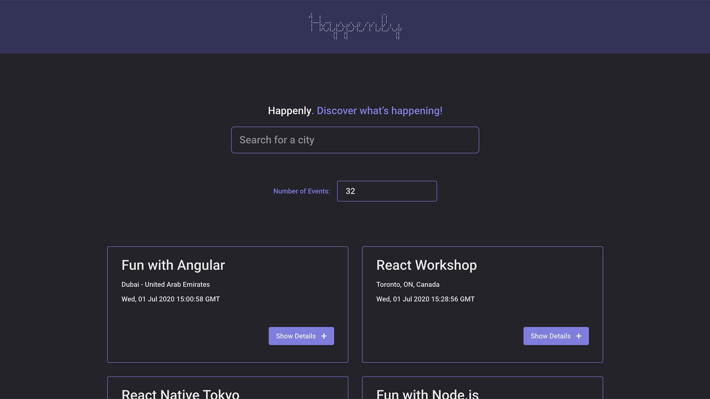

Work / Happenly
Happenly
Discover, Track & Visualize Events That Matter
Project Overview
Happenly is a feature-rich, modern web application built to streamline the process of discovering, tracking, and visualizing events. Designed with user experience and accessibility in mind, Happenly empowers users to find relevant events in their city, customize how information is displayed, and gain insights through interactive analytics. The application is fully responsive, installable as a Progressive Web App (PWA), and supports offline usage, ensuring a seamless experience across devices and network conditions.
Objective
The primary goal of Happenly is to provide users with a smart, intuitive event companion that adapts to their preferences and needs. By combining robust filtering, real-time data visualization, and offline capabilities, the app aims to make event discovery both efficient and enjoyable. This project also demonstrates my ability to deliver production-ready, scalable solutions using modern web technologies and best practices.
Key Features
- City-Based Event Filtering: Users can search for events by city, receive real-time suggestions, and even select multiple cities to broaden their search.
- Customizable Event Listings: Control how many events are displayed and toggle the level of detail for each event, enhancing usability and personalization.
- Offline Functionality: Leveraging service workers and caching, users can access previously loaded events even without an internet connection.
- Progressive Web App (PWA): Happenly can be installed on any device for one-tap access, with support for home screen shortcuts and a native app-like experience.
- Interactive Data Visualization: Integrated charts and analytics help users understand event trends and make informed decisions.
- Accessibility: Full keyboard navigation and screen reader support ensure the app is usable by everyone.
- Robust Testing: Comprehensive unit, integration, and end-to-end tests ensure reliability and maintainability.
Technologies Used
- Frontend: React (with modern hooks and functional components), Vite (for fast development and optimized builds), SCSS for modular styling, and Recharts for data visualization.
- PWA & Offline: Vite PWA plugin, Workbox for service worker management and offline caching.
- Testing: Jest, React Testing Library, Puppeteer for end-to-end testing, and Jest-Cucumber for behavior-driven development.
- Code Quality: ESLint and Prettier for consistent code style and error prevention.
- Backend/Auth: Node.js (serverless architecture), Google APIs for secure authentication.
- Other: Modern JavaScript (ES6+), responsive design principles, and accessibility best practices.
What This Project Demonstrates
Happenly showcases my ability to architect and deliver a full-stack, production-ready application using the latest web technologies. It highlights my focus on user experience, accessibility, performance, and code quality—skills that I am eager to bring to a forward-thinking development team.